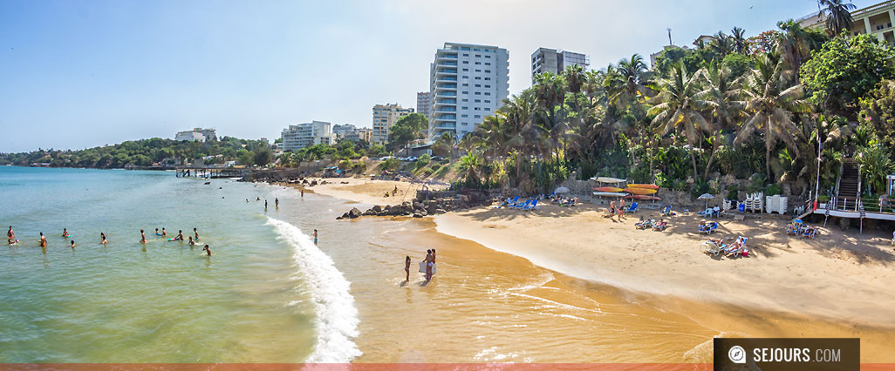
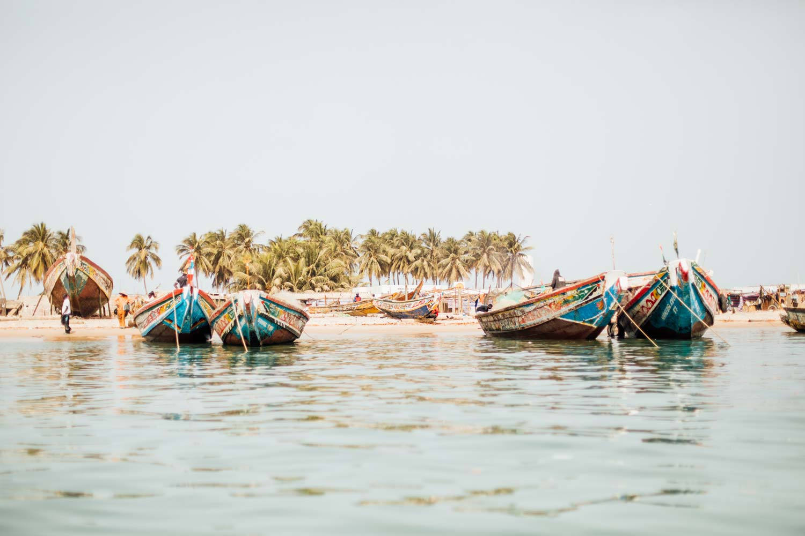
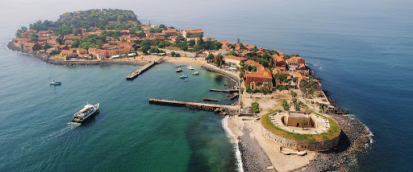
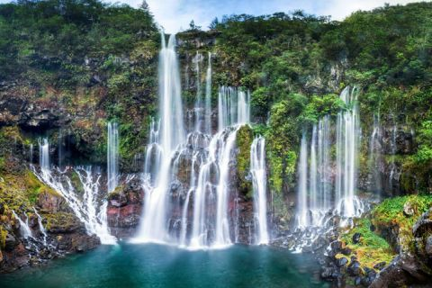
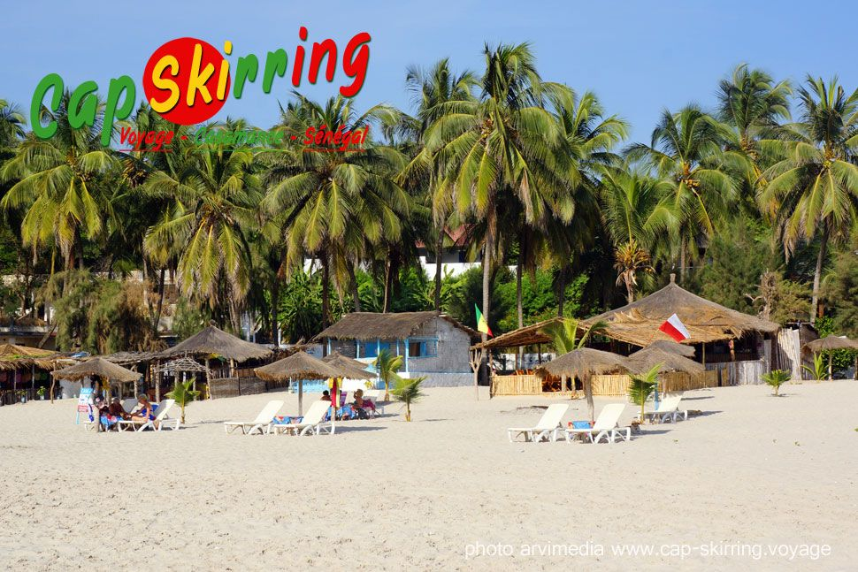
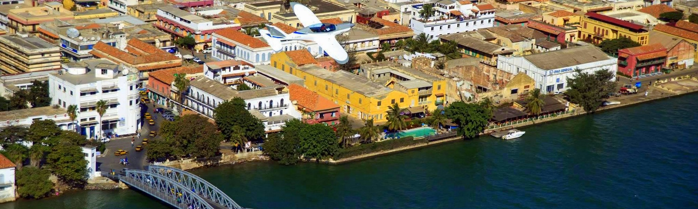

Belles maisons coloniales aux couleurs chaudes, ruelles de sable, bougainvillées généreuses... l'île de Gorée, au large de Dakar, est empreinte d'une harmonie et d'un calme étonnants, mais n'oublie pas les heures sombres de la traite des esclaves. Gorée est classée au patrimoine mondial de l'Unesco.

la région de Kédougou déploie son charme et ses beautés. Ici, le fleuve, qui porte le nom d'un autre pays, la Gambie, rafraîchit un peu l'air, les collines apaisent l'éternelle platitude. On découvre en y arrivant les courbes des collines environnantes. Les derniers contreforts du Fouta Djalon en Guinée-Conakry, qui donnent aux paysages cette beauté unique au Sénégal, des cascades, des falaises qui font le bonheur des touristes randonneurs. Et pour peu que vous arriviez aux lendemains des premières pluies, c'est toute une verdure aux allures équatoriales qui se déploiera sous vos yeux. Un passage à Kédougou s'impose depuis Dakar, et la ville se révèle très agréable pour faire une halte sur les bords de la rivière Gambie, avant de partir à la découverte des villages peuls, bédik, bassari et djaloncké. Vous pouvez aussi séjourner dans un hôtel confortable avec piscine et vue sur le fleuve et les hippos, avant (ou après) la vie dans des cases sans eau courante et sans électricité dans les montagnes. Comme à Tamba, l'atmosphère de la ville pourrait bien vous séduire et vous donner l'envie de rester un peu...

La Casamance est une région incontournable de tout voyage au Sénégal, entre Gambie et Guinée-Bissau. La région la plus fertile du pays, à la végétation généreuse, attire aussi les visiteurs pour sa côte atlantique superbe, ourlée de plages splendides au premier rang desquelles figure Cap-Skirring.

À l'ouest du pays, baignée par l'océan Atlantique et le fleuve Sénégal, Saint-Louis peut s'enorgueillir de son centre historique classé au patrimoine mondial de l'Unesco, où façades élégantes et colorées mettent en valeur la diversité du pays. Profitez de son air tempéré et de ses plages de sable. Fin décembre, le Fanal (carnaval), rejoue la tradition.
